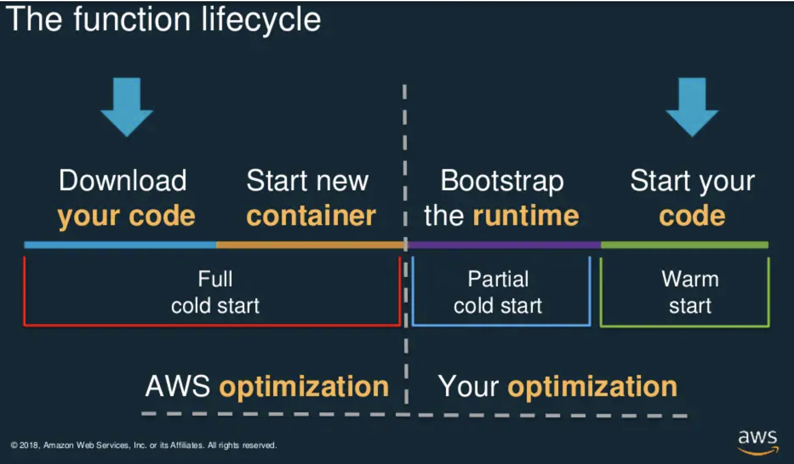

<!DOCTYPE html>
<html lang="en">

<!-- Head tag (contains Google-Analytics、Baidu-Tongji)-->
<head>
  <!-- Google Analytics -->
  
  <!-- Global site tag (gtag.js) - Google Analytics -->
  <script async="async" src="https://www.googletagmanager.com/gtag/js?id=UA-xxxxxx-xx"></script>
  <script type="text/javascript">
    window.dataLayer = window.dataLayer || [];

    function gtag() {
      dataLayer.push(arguments);
    }
    gtag('js', new Date());

    gtag('config', 'UA-xxxxxx-xx');
  </script>
  

  <!-- Baidu Tongji -->
  

  <!-- Baidu Push -->
  

  <meta charset="utf-8" />
  <meta http-equiv="X-UA-Compatible" content="IE=edge" />

  <meta name="google-site-verification" content="lxDfCplOZbIzjhG34NuQBgu2gdyRlAtMB4utP5AgEBc" />
  <meta name="baidu-site-verification" content="PpzM9WxOJU" />

  <meta name="viewport" content="width=device-width, initial-scale=1" />
  <meta name="description" content="It&#39;s an IT blog..." />
  <meta name="keyword" content="hungtm,vitiit,minhhungtrinh" />
  <link rel="shortcut icon" href="/img/avatar/favicon.png" />

  <!-- Place this tag in your head or just before your close body tag. -->
  <script async="async" defer="defer" src="https://buttons.github.io/buttons.js"></script>
  <!-- Bootstrap Core CSS -->
  <link rel="stylesheet" href="/css/bootstrap.min.css" />

  <!-- Custom CSS -->
  <link rel="stylesheet" href="/css/beantech.min.css" />

  <!-- Pygments Highlight CSS -->
  
<link rel="stylesheet" href="../../../../css/highlight.css">
<link rel="stylesheet" href="../../../../css/widget.css">
<link rel="stylesheet" href="../../../../css/rocket.css">
<link rel="stylesheet" href="../../../../css/signature.css">
<link rel="stylesheet" href="../../../../css/catalog.css">
<link rel="stylesheet" href="../../../../css/livemylife.css">


  
  <!-- wave start -->
  <link rel="stylesheet" href="/css/wave.css" />
  <!-- wave end -->
  

  
  <!-- top start (article top hot config) -->
  <link rel="stylesheet" href="/css/top.css" />
  <!-- top end -->
  

  
  <!-- ThemeColor start -->
  <link rel="stylesheet" href="/css/scroll.css" />
  <!-- ThemeColor end -->
  

  
  <!-- viewer start (Picture preview) -->
  <link rel="stylesheet" href="/css/viewer.min.css" />
  <!-- viewer end -->
  

  
  <!-- Search start -->
  <link rel="stylesheet" href="/css/search.css" />
  <!-- Search end -->
  

  
  <!-- ThemeColor start -->
  <link rel="stylesheet" href="/css/themecolor.css" />
  <!-- ThemeColor end -->
  

  
  <!-- gitment start -->
  <link rel="stylesheet" href="https://cdn.jsdelivr.net/gh/theme-next/theme-next-gitment@1/default.css" />
  <!-- gitment end -->
  

  

  <!-- Custom Fonts -->
  <!-- <link href="https://maxcdn.bootstrapcdn.com/font-awesome/4.3.0/css/font-awesome.min.css" rel="stylesheet" type="text/css"> -->
  <!-- Hux change font-awesome CDN to qiniu -->
  <link rel="stylesheet" href="https://cdn.staticfile.org/font-awesome/4.5.0/css/font-awesome.min.css" type="text/css">
  <link href="https://fonts.googleapis.com/icon?family=Material+Icons" rel="stylesheet">

  <!-- Hux Delete, sad but pending in China <link href='http://fonts.googleapis.com/css?family=Lora:400,700,400italic,700italic' rel='stylesheet' type='text/css'> <link
    href='http://fonts.googleapis.com/css?family=Open+Sans:300italic,400italic,600italic,700italic,800italic,400,300,600,700,800' rel='stylesheet' type='text/ css'> -->

  <!-- HTML5 Shim and Respond.js IE8 support of HTML5 elements and media queries -->
  <!-- WARNING: Respond.js doesn't work if you view the page via file:// -->
  <!--[if lt IE 9]> <script src="https://oss.maxcdn.com/libs/html5shiv/3.7.0/html5shiv.js"></script> <script src="https://oss.maxcdn.com/libs/respond.js/1.4.2/respond.min.js"></script> <![endif]-->

  <!-- ga & ba script hoook -->
  <link rel="canonical" href="https://minhhungtrinh.github.io/2021/10/29/Working-with-AWS-Lambda-functions-part-1/">
  <title>
    
    Working with AWS Lambda functions - part 1 - Minh Hung
    
  </title>
<meta name="generator" content="Hexo 4.2.1"></head>


<!-- hack iOS CSS :active style -->

<body ontouchstart="" class="body--home">
	<!-- ThemeColor -->
	
	<!-- ThemeColor -->
<!-- <div class="toggle" onclick="document.body.classList.toggle('body--dark')">Switch Color</div> -->

<div class="toggle" onclick="document.body.classList.toggle('body--dark')">
  <i class="mdui-icon material-icons bright-mode"></i>
  <i class="mdui-icon material-icons dark-mode"></i>
</div>

	

	<!-- Gitter -->
	
	<!-- Gitter -->
<!-- Docs:https://gitter.im/?utm_source=left-menu-logo -->
<script>
  ((window.gitter = {}).chat = {}).options = {
    room: 'hungtm-live-chat/community'
  };
</script>
<script src="https://sidecar.gitter.im/dist/sidecar.v1.js" async defer></script>

	

	<!-- Navigation (contains search)-->
	<!-- Navigation -->
<nav class="navbar navbar-default navbar-custom navbar-fixed-top">
  <div class="container-fluid">
    <!-- Brand and toggle get grouped for better mobile display -->
    <div class="navbar-header page-scroll">
      <button type="button" class="navbar-toggle">
        <span class="sr-only">Toggle navigation</span>
        <span class="icon-bar"></span>
        <span class="icon-bar"></span>
        <span class="icon-bar"></span>
      </button>
<!--       <a class="navbar-brand" href="/"></a> -->
    </div>

    <!-- Collect the nav links, forms, and other content for toggling -->
    <!-- Known Issue, found by Hux:
            <nav>'s height woule be hold on by its content.
            so, when navbar scale out, the <nav> will cover tags.
            also mask any touch event of tags, unfortunately.
        -->
    <div id="huxblog_navbar">
      <div class="navbar-collapse">
        <ul class="nav navbar-nav navbar-right">
          <li>
            <a href="/">Home</a>
          </li>

          

          
          

          
          <li>
            <a href="/about/">About</a>
          </li>
          
          

          
          <li>
            <a href="/archive/">Archives</a>
          </li>
          
          

          
          <li>
            <a href="/categories/">Categories</a>
          </li>
          
          

          
          <li>
            <a href="/tags/">Tags</a>
          </li>
          
          

          
          <li><a class="popup-trigger" title="Search"><span class="search-icon"></span>Search</a></li>
          
        </ul>
      </div>
    </div>
    <!-- /.navbar-collapse -->
  </div>
  <!-- /.container -->
</nav>
<!-- progress -->
<div id="progress">
  <div class="line" style="width: 0%;"></div>
</div>


<script>
  // Drop Bootstarp low-performance Navbar
  // Use customize navbar with high-quality material design animation
  // in high-perf jank-free CSS3 implementation
  var $body = document.body;
  var $toggle = document.querySelector('.navbar-toggle');
  var $navbar = document.querySelector('#huxblog_navbar');
  var $collapse = document.querySelector('.navbar-collapse');

  $toggle.addEventListener('click', handleMagic)

  function handleMagic(e) {
    if ($navbar.className.indexOf('in') > 0) {
      // CLOSE
      $navbar.className = " ";
      // wait until animation end.
      setTimeout(function() {
        // prevent frequently toggle
        if ($navbar.className.indexOf('in') < 0) {
          $collapse.style.height = "0px"
        }
      }, 400)
    } else {
      // OPEN
      $collapse.style.height = "auto"
      $navbar.className += " in";
    }
  }
</script>


	<!-- Post Header (contains intro-header、signature、wordcount、busuanzi、waveoverlay) -->
	<!-- Modified by Yu-Hsuan Yen -->
<!-- Post Header -->

  <style type="text/css">
    header.intro-header {
       /*post*/
        background-image: url('');
      
    }

    
      #signature {/*signature*/
        background-image: url('/img/signature/me.png');
      }
    
  </style>


<header class="intro-header">
  <!-- Signature -->
  <div id="signature">
    <div class="container">
      <div class="row">
        <div class="col-lg-8 col-lg-offset-2 col-md-10 col-md-offset-1">
          
          <div class="post-heading">
            <div class="tags">
              
              <a class="tag" href="/tags/#AWS" title="AWS">AWS</a>
              
              <a class="tag" href="/tags/#Lambda" title="Lambda">Lambda</a>
              
              <a class="tag" href="/tags/#Serverless" title="Serverless">Serverless</a>
              
            </div>
            <h1>Working with AWS Lambda functions - part 1</h1>
            <h2 class="subheading"></h2>
            <span class="meta">
              Posted by MinhHungTrinh on
              2021-10-29
            </span>


            
            <!-- WordCount start -->
            <div class="blank_box"></div>
            <span class="meta">
              Estimated Reading Time <span class="post-count">12</span> Minutes
            </span>
            <div class="blank_box"></div>
            <span class="meta">
              Words <span class="post-count">1.9k</span> In Total
            </span>
            <div class="blank_box"></div>
            <!-- 不蒜子统计 start -->
            <span class="meta">
              Viewed <span id="busuanzi_value_page_pv"><i class="fa fa-spinner fa-spin"></i></span> Times
            </span>
            <!-- 不蒜子统计 end -->
            <!-- WordCount end -->
            


          </div>
          
        </div>
      </div>
    </div>
  </div>

  
  <!-- waveoverlay start -->
  <div class="preview-overlay">
    <svg class="preview-waves" xmlns="http://www.w3.org/2000/svg" xmlns:xlink="http://www.w3.org/1999/xlink" viewBox="0 24 150 28" preserveAspectRatio="none" shape-rendering="auto">
      <defs>
        <path id="gentle-wave" d="M-160 44c30 0 58-18 88-18s 58 18 88 18 58-18 88-18 58 18 88 18 v44h-352z"></path>
      </defs>
      <g class="preview-parallax">
        <use xlink:href="#gentle-wave" x="48" y="0" fill=var(--gentle-wave1)></use>
        <use xlink:href="#gentle-wave" x="48" y="3" fill=var(--gentle-wave2)></use>
        <use xlink:href="#gentle-wave" x="48" y="5" fill=var(--gentle-wave3)></use>
        <use xlink:href="#gentle-wave" x="48" y="7" fill=var(--gentle-wave)></use>
      </g>
    </svg>
  </div>
  <!-- waveoverlay end -->
  

</header>


	<!-- Main Content (Post contains
	Pager、
	tip、
	socialshare、
	gitalk、gitment、disqus-comment、
	Catalog、
	Sidebar、
	Featured-Tags、
	Friends Blog、
	anchorjs、
	) -->
	<!-- Modify by Yu-Hsuan Yen -->
<!-- Post Content -->
<article>
  <div class="container">
    <div class="row">
      <!-- Post Container -->
      <div class="col-lg-8 col-lg-offset-1 col-md-10 col-md-offset-1 post-container">

        <h3 id="Overview"><a href="#Overview" class="headerlink" title="Overview"></a>Overview</h3><p>Chào mọi người, hôm này mình nói về AWS Lambda. Ở bài này mình đang hướng đến best practice cho việc xây dựng lambda kết hợp API Gateway để cung cấp Rest API cho enduser.<br>Nội dung bài hôm nay sẽ chia thành 2 phần. </p>
<ul>
<li>Đầu tiên là tuân thủ best practice với AWS Lambda với docs: <a href="https://docs.aws.amazon.com/lambda/latest/dg/best-practices.html" target="_blank" rel="noopener">https://docs.aws.amazon.com/lambda/latest/dg/best-practices.html</a>. Ae nào ngại đọc tiếng việt thì có thể đọc docs của AWS nhé.</li>
<li>Cold Start là 1 vấn đề lớn của AWS Lambda, thực ra 1 số checklist trong phần best practice ở trên cũng liên quan đến cold start. Chúng ta thử tìm hiểu các giải pháp để giảm thời gian cold Start nhé.</li>
</ul>
<h3 id="1-Best-Practices-for-Lambda-checklist"><a href="#1-Best-Practices-for-Lambda-checklist" class="headerlink" title="1. Best Practices for Lambda (checklist)"></a>1. Best Practices for Lambda (checklist)</h3><h4 id="Function-Code"><a href="#Function-Code" class="headerlink" title="Function Code"></a>Function Code</h4><p>Liên quan đến best practice cho function code. Mọi người chịu khó đọc <a href="https://docs.aws.amazon.com/lambda/latest/dg/best-practices.html#function-code" target="_blank" rel="noopener">https://docs.aws.amazon.com/lambda/latest/dg/best-practices.html#function-code</a> nhé. Cái này còn liên quan đến bạn chạy Runtime là gì, logic. Nên có thể coi để tham khảo nhé. Mình liệt kê keyword ở dưới đây:</p>
<ul>
<li>Separate the Lambda handler from your core logic </li>
<li>Take advantage of execution environment reuse to improve the performance of your function.</li>
<li>Use a keep-alive directive to maintain persistent connections</li>
<li>Use environment variables to pass operational parameters to your function.</li>
<li>Control the dependencies in your function’s deployment package</li>
<li>Minimize your deployment package size to its runtime necessities</li>
<li>Reduce the time it takes Lambda to unpack deployment packages </li>
<li>Minimize the complexity of your dependencies</li>
<li>Avoid using recursive code </li>
<li>Choosing Right Programming Language<br><a href="https://www.simform.com/blog/lambda-cold-starts/#section34" target="_blank" rel="noopener">https://www.simform.com/blog/lambda-cold-starts/#section34</a><br>Thông tin benchmark thì ở đây. Tuy nhiên, cá nhân mình chạy các dự án thì không  được quyết định hoàn toàn về ngôn ngữ. Có vẻ theo Benchmark thì NodeJS và Python đang đạt performance tốt nhất.</li>
</ul>
<h4 id="Function-Configuration"><a href="#Function-Configuration" class="headerlink" title="Function Configuration"></a>Function Configuration</h4><ul>
<li>Performance testing: Bạn cần test Performance của Lambda function. Và đánh giá được max memory (CPU). Với mỗi mức memory thì sẽ cho performance như thế nào. </li>
<li>Memory Configuration: Từ bước ở trên ta sẽ xác định được memory cần cấp phát cho lambda function. Tất nhiên cũng cần buffer thêm. Việc test performance này giúp bạn cân đối được với memory là bao nhiêu thì bạn chấp nhận được performance của lambda chẳng hạn. </li>
<li>Load test Lambda function: Việc test cũng giúp bạn xác định được max timeout là bao nhiêu. Từ đó thiết lập tránh những trường hợp chạy max 15phút khá tốn cost vì lambda tính tiền theo duration.</li>
<li>Use most-restrictive permissions when setting IAM policies: Tất nhiên rồi, bạn cần giới hạn permissions cho IAM Role được attach hoặc Resource Base Policy. </li>
<li>Lambda quotas: Bạn cần quan tâm xem Lambda quotas hiện tại đã đáp ứng được chưa nhé. Nếu không đủ mà quota có thể request AWS nâng lên thì hãy làm, hoặc cũng có kế hoạch xử lý.</li>
<li>Use with SQS: Lưu ý là SQS Visible Timeout phải lớn hơn thời gian lambda xử lý nhé. </li>
</ul>
<h4 id="Metrics-and-alarms"><a href="#Metrics-and-alarms" class="headerlink" title="Metrics and alarms"></a>Metrics and alarms</h4><p>Khi triển khai Lambda là serverless trên AWS. Vậy nên tất cả các dịch vụ đi kèm cũng nên là ở trên AWS để dễ dàng tích hợp. Thật may là AWS Cloudwatch giúp đỡ ta rất mạnh mẽ.</p>
<ul>
<li>Metrics and CloudWatch Alarms: Chúng ta cần tạo Dashboard, Alarm cho lambda function. Các bạn nhớ enable <code>Lambda Insight</code> nhé.</li>
<li>Logs của Lambda thì sẽ được tập hợp về Cloudwatch Logs. Vậy nên để phân biệt dễ hãy cố gắng đặt tên lambda function thật tường mình nhé.</li>
<li>Tracing Request with X-Ray: Ngoài ra mọi người có thể tham khảo việc tracing và analyzing request với AWS X-Ray nhé. Mọi người tham khảo Pricing trước khi sử dụng nhé.</li>
</ul>
<h3 id="2-Code-Start-time"><a href="#2-Code-Start-time" class="headerlink" title="2. Code Start time"></a>2. Code Start time</h3><h4 id="What-is-Cold-Start-in-Lambda"><a href="#What-is-Cold-Start-in-Lambda" class="headerlink" title="What is Cold Start in Lambda?"></a>What is Cold Start in Lambda?</h4><p><br>Hình mình tham khảo từ AWS chính là vòng đời của 1 Lambda function (Lambda container thì cũng tương tự).<br>Như mọi người thấy có 4 giai đoạn:</p>
<ul>
<li>Download code =&gt; Cái này do AWS Optimize, tất nhiên bạn cũng cần optimize code của bạn nữa.</li>
<li>Start new container =&gt; nếu AWS kiểm tra k có container nào đang chạy, nó sẽ phải start container mới</li>
<li>Run Bootstrap =&gt; phần này là cài dependencies. phần này chúng ta phải optimize. Cái này bạn cần optimize để chỉ các package nào cần, nhỏ gọn chẳng hạn. </li>
<li>Warm Start với code của chúng ta, cái này còn phụ thuộc vào ngôn ngữ sử dụng. Và chúng ta cũng phải optimize.</li>
</ul>
<p>Vậy thời gian Cold Start = Download code + Start new Container + Run Bootstrap.<br>Và như chúng ta thấy việc cold start này chỉ xảy ra khi bạn chạy lần đầu. Từ lý do khi muốn ta muốn tăng trải niệm người dùng, giảm độ trễ, Chúng ta sẽ cần đưa ra các giải pháp để hạn chế cold start đi. Nhưng tất nhiên, để đánh đổi được việc đó thì tất cả các giải pháp này đều sẽ làm tăng chi phí.</p>
<h4 id="Mot-so-cach-de-giam-AWS-Lambda-Cold-Start"><a href="#Mot-so-cach-de-giam-AWS-Lambda-Cold-Start" class="headerlink" title="Một số cách để giảm AWS Lambda Cold Start"></a>Một số cách để giảm AWS Lambda Cold Start</h4><p>Các giải pháp thì mình tham khảo từ <a href="https://www.simform.com/blog/lambda-cold-starts/" target="_blank" rel="noopener">https://www.simform.com/blog/lambda-cold-starts/</a> . Vì mình thấy bài này viết thực sự đầy đủ.</p>
<h5 id="Solution-1-Run-Lambdas-Out-of-VPC"><a href="#Solution-1-Run-Lambdas-Out-of-VPC" class="headerlink" title="Solution 1. Run Lambdas Out of VPC"></a>Solution 1. Run Lambdas Out of VPC</h5><p>Mọi người có thể tự test để trải niệm hoặc tham khảo kết quả benmark của <a href="https://www.simform.com/blog/lambda-cold-starts/#section31" target="_blank" rel="noopener">Nathan</a>.<br>Việc build lambda function đặt trong 1 VPC bạn tự tạo thì coldstart gấp nhiều lần với lambda function được AWS tự động cấp phát network. Vậy nên chỉ trừ trường hợp bạn bắt buộc phải attach VPC để có thể giao tiếp về mặt network với thành phần khác thì hãy cố gắng hướng tới việc triển khai Lambda với no-VPC nha.<br>Ví dụ: </p>
<ul>
<li>Lambda =&gt; DynamoDB thì k cần attach VPC</li>
<li>Lambda =&gt; RDS Proxy =&gt; RDS thì cần attach VPC.</li>
</ul>
<h5 id="Solution-2-Provisional-Concurrency"><a href="#Solution-2-Provisional-Concurrency" class="headerlink" title="Solution 2. Provisional Concurrency"></a>Solution 2. Provisional Concurrency</h5><p>Lý thuyết về Provisioning Concurency: <a href="https://docs.aws.amazon.com/lambda/latest/dg/provisioned-concurrency.html#managing-provisioned-concurency" target="_blank" rel="noopener">https://docs.aws.amazon.com/lambda/latest/dg/provisioned-concurrency.html#managing-provisioned-concurency</a></p>
<p>Liên quan đến lý thuyết cold start ở trên, bây giờ để tránh bị cold start chúng ta sẽ cho chạy sẵn 1 số lượng concurency lambda. Khi hệ thống peak hour thì các request sẽ k bị cold start mà sẽ thực hiện luôn.<br>Đây có lẽ là giải pháp xử lý hoàn toàn được cold start. Tuy nhiên đánh đổi của nó là cost. Điểm mạnh của Lambda là chỉ sử dụng khi cần =&gt; chỉ trả phí duration khi có request. Tuy nhiên với Provisioning Concurency thì chúng ta hiểu như là bật 24/24 rồi. Từ đó sẽ thấy Cost khi sử dụng lambda bị tăng lên rất nhiều, theo mình thấy là còn hơn chạy EC2 nhiều. Lúc này, chúng ta chỉ đảm bảo tiêu chí được khả năng đáp ứng<br>Tuy nhiên, ta cũng có vài giải pháp để giảm thiểu với ApplicationAutoScaling bằng cách kết hợp với Dynamic Scale hoặc Schedule Scale giá trị Provision Concurency để giảm thiểu cost. Mình áp dụng cho dự án của mình và thấy khá hiệu quả. Mọi người có thể tham khảo link này nhé: <a href="https://aws.amazon.com/blogs/compute/scheduling-aws-lambda-provisioned-concurrency-for-recurring-peak-usage/" target="_blank" rel="noopener">https://aws.amazon.com/blogs/compute/scheduling-aws-lambda-provisioned-concurrency-for-recurring-peak-usage/</a></p>
<h5 id="Solution-3-Keeping-Your-Lambda-Functions-Warm"><a href="#Solution-3-Keeping-Your-Lambda-Functions-Warm" class="headerlink" title="Solution 3. Keeping Your Lambda Functions Warm"></a>Solution 3. Keeping Your Lambda Functions Warm</h5><p>Giải pháp này thì bản chất là cũng muốn giữ cho Lambda function luôn ở trạng thái Warm. Lợi dụng cơ chế, sau khi lambda function xử lý request xong thì container sẽ được keep warm trong 1 khoảng thời gian, hình như là 15 phút gì đó. Nên từ đó chúng ta sẽ xây dựng cơ chế ping tới lambda đó sau 1 khoảng thời gian (ví dụ 5 phút 1 lần).<br>Tất nhiên giải pháp này thì tiết kiệm hơn giải pháp provisioning concurency ở trên.<br>Tuy nhiên, mình thấy việc ping này chỉ keep warm cho 1 containers thôi. Ví dụ vào thời điểm peak hour thì sẽ không phù hợp, hệ thống vẫn bị cold start.<br>Mọi người tham khảo:<br><a href="https://github.com/juanjoDiaz/serverless-plugin-warmup" target="_blank" rel="noopener">https://github.com/juanjoDiaz/serverless-plugin-warmup</a></p>
<h3 id="Ket-luan"><a href="#Ket-luan" class="headerlink" title="Kết luận:"></a>Kết luận:</h3><p>Bài viết này là trong quá trình mình làm việc với Lambda dẫn tới việc phải research các tài liệu dưới đây để viết checklist cũng như các giải pháp cho các vấn đề của Lambda. Rất mong được mọi người  góp thêm của mọi người.<br>Ở bài viết sau có lẽ mình sẽ viết bài lab để xử lý colde start.<br> Bài viết được tham khảo từ:</p>
<ul>
<li>AWS Docs: <a href="https://docs.aws.amazon.com/lambda/latest/dg/best-practices.html" target="_blank" rel="noopener">https://docs.aws.amazon.com/lambda/latest/dg/best-practices.html</a></li>
<li>Schedule Provisioning Solutions: <a href="https://aws.amazon.com/blogs/compute/scheduling-aws-lambda-provisioned-concurrency-for-recurring-peak-usage/" target="_blank" rel="noopener">https://aws.amazon.com/blogs/compute/scheduling-aws-lambda-provisioned-concurrency-for-recurring-peak-usage/</a></li>
<li>Tham khảo solution, benchmark từ: <a href="https://www.simform.com/blog/lambda-cold-starts" target="_blank" rel="noopener">https://www.simform.com/blog/lambda-cold-starts</a></li>
</ul>


        <hr>
        <!-- Pager -->
        <ul class="pager">
          
          
          <li class="next">
            <a href="/2021/08/28/Amazon-S3-Access-Control-IAM-Policies-Bucket-Policies-and-ACLs/" data-toggle="tooltip" data-placement="top" title="Amazon S3 Access Control - IAM Policies, Bucket Policies and ACLs">Next Post &rarr;</a>
          </li>
          
        </ul>

        
        <!-- tip start -->
        <div class="tip">
          <p>
            Đây là Blog cá nhân của MinhHungTrinh, nơi mình chia sẻ, lưu giữ kiến thức. Nếu các bạn có góp ý, thắc mắc thì vui lòng comment bên dưới cho mình biết nhé. Mình luôn là người lắng nghe và ham học hỏi. Các vấn đề đặc biệt hoặc tế nhị mọi người có thể gửi email tới minhhungtrinhvn@gmail.com. Cảm ơn Mọi Người đã đọc Blog của mình. Yolo!
          </p>
        </div>
        <!-- tip end -->
        

        
        <!-- Sharing Srtart -->
        <!-- Social Social Share Post -->
<!-- Docs:https://github.com/overtrue/share.js -->
<div class="social-share" data-initialized="true" data-disabled="tencent ,douban ,qzone ,linkedin ,diandian" data-wechat-qrcode-helper="" align="center">
  <ul class="list-inline text-center social-share-ul">
    <li class="social-share-li">
      <a href="#"  class="social-share-icon icon-facebook">
        <i class="fa fa-facebook fa-1x" aria-hidden="true"></i>
      </a>
    </li>
    <li class="social-share-li">
      <a target="_blank" class="social-share-icon" href="mailto:minhhungtrinhvn@gmail.com?subject=Working with AWS Lambda functions - part 1&body=Hi,I found this website and thought you might like it https://minhhungtrinh.github.io/2021/10/29/Working-with-AWS-Lambda-functions-part-1/">
        <i class="fa fa-envelope fa-1x" aria-hidden="true"></i>
      </a>
    </li>
  </ul>
</div>

<!-- css & js -->
<!-- <link rel="stylesheet" href="https://cdnjs.cloudflare.com/ajax/libs/social-share.js/1.0.16/css/share.min.css"> -->
<script defer="defer" async="true" src="https://cdnjs.cloudflare.com/ajax/libs/social-share.js/1.0.16/js/social-share.min.js"></script>

        <!-- Sharing End -->
        
        <hr>

        <!-- comments start -->
        <!-- 1. gitalk comment -->


<!-- 2. gitment comment -->

<!-- gitment start -->
<!-- Docs:https://github.com/imsun/gitment -->

<div id="blog_comments"></div>
<!-- <link rel="stylesheet" href="https://imsun.github.io/gitment/style/default.css"> <script src="https://imsun.github.io/gitment/dist/gitment.browser.js"></script> -->

<script src="https://cdn.jsdelivr.net/gh/theme-next/theme-next-gitment@1/gitment.browser.js"></script>

<script>
  const myTheme = {
    render(state, instance) {
      const container = document.createElement('div')
      container.lang = "en-US"
      container.className = 'gitment-container gitment-root-container'

      // your custom component
      container.appendChild(instance.renderSomething(state, instance))
      container.appendChild(instance.renderHeader(state, instance))
      container.appendChild(instance.renderEditor(state, instance))
      container.appendChild(instance.renderComments(state, instance))
      container.appendChild(instance.renderFooter(state, instance))
      return container
    },
    renderSomething(state, instance) {
      const container = document.createElement('div')
      container.lang = "en-US"
      container.className = 'hello_visitor'
      if (state.user.login) {
        container.innerText = `Hello ${state.user.login}, Welcome to comment system`
      }
      return container
    }
  }

  const gitment = new Gitment({
    id: 'Fri Oct 29 2021 18:17:47 GMT+0700', // optional
    owner: 'MinhHungTrinh',
    repo: 'MinhHungTrinh.github.io',
    oauth: {
      client_id: 'f23a1a1a678355dff851',
      client_secret: '5b4c1011ed3613893952bd69fbdab696b32bec3b'
    },
    desc: '',
    perPage: '10',
    maxCommentHeight: '250',
    theme: myTheme,
    // ... For more available options, check out the documentation below
  })

  gitment.render('blog_comments')
  // or gitment.render(document.getElementById('comments')) or document.body.appendChild(gitment.render())
</script>

<!-- gitment end -->


<!-- 3. disqus comment -->


        <!-- comments end -->
        <hr>

      </div>

      <!-- Catalog: Tabe of Content -->
      <!-- Table of Contents -->

    
      <aside id="sidebar">
        <div id="toc" class="toc-article">
        <strong class="toc-title">Contents</strong>
        
          <ol class="toc-nav"><li class="toc-nav-item toc-nav-level-3"><a class="toc-nav-link" href="#Overview"><span class="toc-nav-number">1.</span> <span class="toc-nav-text">Overview</span></a></li><li class="toc-nav-item toc-nav-level-3"><a class="toc-nav-link" href="#1-Best-Practices-for-Lambda-checklist"><span class="toc-nav-number">2.</span> <span class="toc-nav-text">1. Best Practices for Lambda (checklist)</span></a><ol class="toc-nav-child"><li class="toc-nav-item toc-nav-level-4"><a class="toc-nav-link" href="#Function-Code"><span class="toc-nav-number">2.1.</span> <span class="toc-nav-text">Function Code</span></a></li><li class="toc-nav-item toc-nav-level-4"><a class="toc-nav-link" href="#Function-Configuration"><span class="toc-nav-number">2.2.</span> <span class="toc-nav-text">Function Configuration</span></a></li><li class="toc-nav-item toc-nav-level-4"><a class="toc-nav-link" href="#Metrics-and-alarms"><span class="toc-nav-number">2.3.</span> <span class="toc-nav-text">Metrics and alarms</span></a></li></ol></li><li class="toc-nav-item toc-nav-level-3"><a class="toc-nav-link" href="#2-Code-Start-time"><span class="toc-nav-number">3.</span> <span class="toc-nav-text">2. Code Start time</span></a><ol class="toc-nav-child"><li class="toc-nav-item toc-nav-level-4"><a class="toc-nav-link" href="#What-is-Cold-Start-in-Lambda"><span class="toc-nav-number">3.1.</span> <span class="toc-nav-text">What is Cold Start in Lambda?</span></a></li><li class="toc-nav-item toc-nav-level-4"><a class="toc-nav-link" href="#Mot-so-cach-de-giam-AWS-Lambda-Cold-Start"><span class="toc-nav-number">3.2.</span> <span class="toc-nav-text">Một số cách để giảm AWS Lambda Cold Start</span></a><ol class="toc-nav-child"><li class="toc-nav-item toc-nav-level-5"><a class="toc-nav-link" href="#Solution-1-Run-Lambdas-Out-of-VPC"><span class="toc-nav-number">3.2.1.</span> <span class="toc-nav-text">Solution 1. Run Lambdas Out of VPC</span></a></li><li class="toc-nav-item toc-nav-level-5"><a class="toc-nav-link" href="#Solution-2-Provisional-Concurrency"><span class="toc-nav-number">3.2.2.</span> <span class="toc-nav-text">Solution 2. Provisional Concurrency</span></a></li><li class="toc-nav-item toc-nav-level-5"><a class="toc-nav-link" href="#Solution-3-Keeping-Your-Lambda-Functions-Warm"><span class="toc-nav-number">3.2.3.</span> <span class="toc-nav-text">Solution 3. Keeping Your Lambda Functions Warm</span></a></li></ol></li></ol></li><li class="toc-nav-item toc-nav-level-3"><a class="toc-nav-link" href="#Ket-luan"><span class="toc-nav-number">4.</span> <span class="toc-nav-text">Kết luận:</span></a></li></ol>
        
        </div>
      </aside>
    


      <!-- Sidebar Container -->
      <div class="
                col-lg-8 col-lg-offset-2
                col-md-10 col-md-offset-1
                sidebar-container">

        <!-- Featured Tags -->
        
        <section>
          <!-- no hr -->
          <h5>
            <a href="/tags/">FEATURED TAGS</a>
          </h5>
          <div class="tags">
            
            <a class="tag" href="/tags/#AWS" title="AWS">AWS</a>
            
            <a class="tag" href="/tags/#Lambda" title="Lambda">Lambda</a>
            
            <a class="tag" href="/tags/#Serverless" title="Serverless">Serverless</a>
            
          </div>
        </section>
        

        <!-- Friends Blog -->
        
        <hr>
        <h5>FRIENDS</h5>
        <ul class="list-inline">

          
          <li>
            <a href="https://minhhungtrinh.github.io/" target="_blank">HungTM</a>
          </li>
          
        </ul>
        
      </div>
    </div>
  </div>
</article>


<!-- anchorjs start -->
<!-- async load function -->
<!-- anchor-js, Doc:http://bryanbraun.github.io/anchorjs/ -->
<script type="text/javascript">
  // async load function
  function async (u, c) {
    var d = document,
      t = 'script',
      o = d.createElement(t),
      s = d.getElementsByTagName(t)[0];
    o.src = u;
    if (c) {
      o.addEventListener('load', function(e) {
        c(null, e);
      }, false);
    }
    s.parentNode.insertBefore(o, s);
  };
</script>
<script type="text/javascript">
  //anchor-js, Doc:http://bryanbraun.github.io/anchorjs/
  async ("https://cdn.bootcss.com/anchor-js/1.1.1/anchor.min.js", function() {
    anchors.options = {
      visible: 'hover',
      placement: 'left',
      // icon: 'ℬ'
      icon: '❡'
    };
    anchors.add().remove('.intro-header h1').remove('.subheading').remove('.sidebar-container h5');
  });
</script>
<style>
  /* place left on bigger screen */
  @media all and (min-width: 800px) {
    .anchorjs-link {
      position: absolute;
      left: -0.75em;
      font-size: 1.1em;
      margin-top: -0.1em;
    }
  }
</style>

<!-- anchorjs end -->


	<!-- Footer (contains ThemeColor、viewer) -->
	<!-- Footer -->
<footer>
  <div class="container">
    <div class="row">
      <div class="col-lg-8 col-lg-offset-2 col-md-10 col-md-offset-1">
        <ul class="list-inline text-center">
          

          
            <li>
              <a target="_blank" href="https://github.com/MinhHungTrinh">
                <span class="fa-stack fa-lg">
                  <i class="fa fa-circle fa-stack-2x"></i>
                  <i class="fa fa-github fa-stack-1x fa-inverse"></i>
                </span>
              </a>
            </li>
          

          

          

          

          

          

          

        </ul>
        <p class="copyright text-muted">
          Copyright &copy;
          MinhHungTrinh
          2021
          <br>
          Theme by
          <a href="http://beantech.org" target="_blank" rel="noopener">BeanTech</a>
          <span style="display: inline-block; margin: 0 5px;">
            <i class="fa fa-heart"></i>
          </span>
          re-Ported by
          <a href="https://v-vincen.life/" target="_blank" rel="noopener">Live My Life</a>
          |
          <iframe style="margin-left: 2px; margin-bottom:-5px;" frameborder="0" scrolling="0" width="91px" height="20px" src="https://ghbtns.com/github-btn.html?user=V-Vincen&repo=V-Vincen.github.io&type=star&count=true"></iframe>
        </p>
      </div>
    </div>
  </div>
</footer>

<a id="rocket" href="#top" class=""></a>

<!-- jQuery -->
<script type="text/javascript" src="/js/jquery.min.js"></script>
<!-- <script type="text/javascript" src="/js/jquery.js"></script> -->
<!-- <script type="text/javascript" src="//cdnjs.loli.net/ajax/libs/jquery/3.2.1/jquery.min.js"></script> -->

<!-- Bootstrap Core JavaScript -->
<script type="text/javascript" src="/js/bootstrap.min.js"></script>

<!-- Custom Theme JavaScript -->
<script type="text/javascript" src="/js/hux-blog.min.js"></script>

<!-- catalog -->
<script type="text/javascript" async="true" src="/js/catalog.js?v=1.0.0"></script>

<!-- totop(rocket) -->
<script type="text/javascript" async="true" src="/js/totop.js?v=1.0.0"></script>

<!-- Busuanzi JavaScript -->
<script type="text/javascript" async="true" src="/js/busuanzi.pure.mini.js"></script>


  <!-- Scroll start -->
  <script type="text/javascript" src="/js/scroll.js"></script>
  <!-- Scroll end -->


  <!-- ThemeColor start -->
  <script type="text/javascript" src="/js/themecolor.js"></script>
  <!-- ThemeColor end -->


  <!-- viewer start -->
  <!-- viewer start (Picture preview) -->
  <script type="text/javascript" src="/js/viewer/viewer.min.js"></script>
  <script type="text/javascript" src="/js/viewer/pic-viewer.js"></script>
  <!-- viewer end -->


<script>
  // async load function
  function async (u, c) {
    var d = document,
      t = 'script',
      o = d.createElement(t),
      s = d.getElementsByTagName(t)[0];
    o.src = u;
    if (c) {
      o.addEventListener('load', function (e) {
        c(null, e);
      }, false);
    }
    s.parentNode.insertBefore(o, s);
  }

  // fastClick.js
  async ("https://cdn.bootcss.com/fastclick/1.0.6/fastclick.min.js", function () {
    var $nav = document.querySelector("nav");
    if ($nav)
      FastClick.attach($nav);
    }
  )
</script>

<!-- Because of the native support for backtick-style fenced code blocks right within the Markdown is landed in Github Pages, From V1.6, There is no need for Highlight.js, so Huxblog drops it officially. -
https://github.com/blog/2100-github-pages-now-faster-and-simpler-with-jekyll-3-0 - https://help.github.com/articles/creating-and-highlighting-code-blocks/ -->
<!-- <script> async("http://cdn.bootcss.com/highlight.js/8.6/highlight.min.js", function(){ hljs.initHighlightingOnLoad(); }) </script> <link href="http://cdn.bootcss.com/highlight.js/8.6/styles/github.min.css" rel="stylesheet"> -->

<!-- jquery.tagcloud.js -->
<!-- <script> // only load tagcloud.js in tag.html if($('#tag_cloud').length !== 0){ async("https://minhhungtrinh.github.io/js/jquery.tagcloud.js",function(){ $.fn.tagcloud.defaults = { //size: {start: 1, end: 1, unit: 'em'}, color: {start:
'#bbbbee', end: '#0085a1'}, }; $('#tag_cloud a').tagcloud(); }) } </script> -->


	<!-- Search -->
	
	<div class="popup search-popup local-search-popup">
  <span class="popup-btn-close">
    ESC
  </span>
  <div class="container">
    <div class="row">
      <!-- <div class="col-md-9 col-md-offset-1"> -->
      <div class="col-lg-9 col-lg-offset-1 col-md-10 col-md-offset-1 local-search-content">

        <div class="local-search-header clearfix">

          <div class="local-search-input-wrapper">
            <span class="search-icon">
              <i class="fa fa-search fa-lg" style="margin: 25px 10px 25px 20px;"></i>
            </span>
            <input autocomplete="off" placeholder="Search..." type="text" id="local-search-input">
          </div>
        </div>
        <div id="local-search-result"></div>
      </div>
    </div>
  </div>
</div>


  <script src="/js/ziploader.js"></script>
  <script>
    // Popup Window;
    var isfetched = false;
    var isXml = true;
    // Search DB path;
    var search_path = "search.json";
    if (search_path.length === 0) {
      search_path = "search.xml";
    } else if (/json$/i.test(search_path)) {
      isXml = false;
    }
    // monitor main search box;
    var onPopupClose = function (e) {
      $('.popup').fadeOut(300);
      $('#local-search-input').val('');
      $('.search-result-list').remove();
      $('#no-result').remove();
      $('body').css('overflow', '');
    }

    function proceedsearch() {
      $('.popup').fadeIn(300);
      var $localSearchInput = $('#local-search-input');
      $localSearchInput.attr("autocapitalize", "none");
      $localSearchInput.attr("autocorrect", "off");
      $localSearchInput.focus();
    }
    // get search zip version
    $.get('/searchVersion.json?t=' + (+new Date()), function (res) {
      if (localStorage.getItem('searchVersion') !== res) {
        localStorage.setItem('searchVersion', res);
        initSearchJson();
      }
    });

    function initSearchJson() {
      initLoad(['/search.flv'], {
        loadOptions: {
          success: function (obj) {
            localStorage.setItem('searchJson', obj['search.json'])
          },
          error: function (e) {
            return console.log(e)
          }
        },
        returnOptions: {
          'json': TYPE_TEXT
        },
        mimeOptions: {
          'json': 'application/json'
        }
      })
    }
    // search function;
    var searchFunc = function (search_id, content_id) {
      'use strict';
      isfetched = true;
      var datas = JSON.parse(localStorage.getItem('searchJson'));
      // console.log(search_id)
      var input = document.getElementById(search_id);
      var resultContent = document.getElementById(content_id);
      var inputEventFunction = function () {
        var searchText = input.value.trim().toLowerCase();
        var keywords = searchText.split(/[\s\-]+/);
        if (keywords.length > 1) {
          keywords.push(searchText);
        }
        var resultItems = [];
        if (searchText.length > 0) {
          // perform local searching
          datas.forEach(function (data) {
            var isMatch = false;
            var hitCount = 0;
            var searchTextCount = 0;
            var title = data.title
              ? data.title.trim()
              : '';
            var titleInLowerCase = title.toLowerCase();
            var content = data.content
              ? data.content.trim().replace(/<[^>]+>/g, "")
              : '';
            var contentInLowerCase = content.toLowerCase();
            var articleUrl = decodeURIComponent(data.url);

            var date = data.date;
            var dateTime = date.replace(/T/, " ").replace(/.000Z/, "");
            var imgUrl = data.header_img;

            var indexOfTitle = [];
            var indexOfContent = [];
            // only match articles with not empty titles
            keywords.forEach(function (keyword) {
              function getIndexByWord(word, text, caseSensitive) {
                var wordLen = word.length;
                if (wordLen === 0) {
                  return [];
                }
                var startPosition = 0,
                  position = [],
                  index = [];
                if (!caseSensitive) {
                  text = text.toLowerCase();
                  word = word.toLowerCase();
                }
                while ((position = text.indexOf(word, startPosition)) > -1) {
                  index.push({position: position, word: word});
                  startPosition = position + wordLen;
                }
                return index;
              }
              indexOfTitle = indexOfTitle.concat(getIndexByWord(keyword, titleInLowerCase, false));
              indexOfContent = indexOfContent.concat(getIndexByWord(keyword, contentInLowerCase, false));
            });
            if (indexOfTitle.length > 0 || indexOfContent.length > 0) {
              isMatch = true;
              hitCount = indexOfTitle.length + indexOfContent.length;
            }
            // show search results
            if (isMatch) {
              // sort index by position of keyword
              [indexOfTitle, indexOfContent].forEach(function (index) {
                index.sort(function (itemLeft, itemRight) {
                  if (itemRight.position !== itemLeft.position) {
                    return itemRight.position - itemLeft.position;
                  } else {
                    return itemLeft.word.length - itemRight.word.length;
                  }
                });
              });
              // merge hits into slices
              function mergeIntoSlice(text, start, end, index) {
                var item = index[index.length - 1];
                var position = item.position;
                var word = item.word;
                var hits = [];
                var searchTextCountInSlice = 0;
                while (position + word.length <= end && index.length != 0) {
                  if (word === searchText) {
                    searchTextCountInSlice++;
                  }
                  hits.push({position: position, length: word.length});
                  var wordEnd = position + word.length;
                  // move to next position of hit
                  index.pop();
                  while (index.length != 0) {
                    item = index[index.length - 1];
                    position = item.position;
                    word = item.word;
                    if (wordEnd > position) {
                      index.pop();
                    } else {
                      break;
                    }
                  }
                }
                searchTextCount += searchTextCountInSlice;
                return {hits: hits, start: start, end: end, searchTextCount: searchTextCountInSlice};
              }
              var slicesOfTitle = [];
              if (indexOfTitle.length != 0) {
                slicesOfTitle.push(mergeIntoSlice(title, 0, title.length, indexOfTitle));
              }
              var slicesOfContent = [];
              while (indexOfContent.length != 0) {
                var item = indexOfContent[indexOfContent.length - 1];
                var position = item.position;
                var word = item.word;
                // cut out 100 characters
                var start = position - 20;
                var end = position + 80;
                if (start < 0) {
                  start = 0;
                }
                if (end < position + word.length) {
                  end = position + word.length;
                }
                if (end > content.length) {
                  end = content.length;
                }
                slicesOfContent.push(mergeIntoSlice(content, start, end, indexOfContent));
              }
              // sort slices in content by search text's count and hits' count
              slicesOfContent.sort(function (sliceLeft, sliceRight) {
                if (sliceLeft.searchTextCount !== sliceRight.searchTextCount) {
                  return sliceRight.searchTextCount - sliceLeft.searchTextCount;
                } else if (sliceLeft.hits.length !== sliceRight.hits.length) {
                  return sliceRight.hits.length - sliceLeft.hits.length;
                } else {
                  return sliceLeft.start - sliceRight.start;
                }
              });
              // select top N slices in content
              var upperBound = parseInt('1');
              if (upperBound >= 0) {
                slicesOfContent = slicesOfContent.slice(0, upperBound);
              }
              // highlight title and content
              function highlightKeyword(text, slice) {
                var result = '';
                var prevEnd = slice.start;
                slice.hits.forEach(function (hit) {
                  result += text.substring(prevEnd, hit.position);
                  var end = hit.position + hit.length;
                  result += '<b class="search-keyword">' + text.substring(hit.position, end) + '</b>';
                  prevEnd = end;
                });
                result += text.substring(prevEnd, slice.end);
                return result;
              }
              var resultItem = '';

              // if (slicesOfTitle.length != 0) {   resultItem += "<li><a target='_blank' href='" + articleUrl + "' class='search-result-title'>" + highlightKeyword(title, slicesOfTitle[0]) + "</a>"; } else {   resultItem += "<li><a target='_blank' href='" +
              // articleUrl + "' class='search-result-title'>" + title + "</a>"; } slicesOfContent.forEach(function (slice) {   resultItem += "<a target='_blank' href='" + articleUrl + "'><p class=\"search-result\">" + highlightKeyword(content, slice) +
              // "...</p></a>"; }); resultItem += "</li>";

              if (slicesOfTitle.length != 0) {
                resultItem += "<a target='_blank' href='" + articleUrl + "' class='search-result'><div class='search-result-left'><div class='search-result-title'>" + highlightKeyword(title, slicesOfTitle[0]) + "</div><time class='search-result-date'>" + dateTime + "</time>";
              } else {
                resultItem += "<a target='_blank' href='" + articleUrl + "' class='search-result'><div class='search-result-left'><div class='search-result-title'>" + title + "</div><time class='search-result-date'>" + dateTime + "</time>";
              }
              slicesOfContent.forEach(function (slice) {
                resultItem += "<p class=\"search-result-content\">" + highlightKeyword(content, slice) + "...</p>";
              });
              resultItem += "</div><div class='search-result-right'></img></div></a>";

              resultItems.push({item: resultItem, searchTextCount: searchTextCount, hitCount: hitCount, id: resultItems.length});
            }
          })
        };

        if (keywords.length === 1 && keywords[0] === "") {
          resultContent.innerHTML = '<div id="no-result"></div>'
        } else if (resultItems.length === 0) {
          resultContent.innerHTML = '<div id="no-result"></div>'
        } else {
          resultItems.sort(function (resultLeft, resultRight) {
            if (resultLeft.searchTextCount !== resultRight.searchTextCount) {
              return resultRight.searchTextCount - resultLeft.searchTextCount;
            } else if (resultLeft.hitCount !== resultRight.hitCount) {
              return resultRight.hitCount - resultLeft.hitCount;
            } else {
              return resultRight.id - resultLeft.id;
            }
          });
          var searchResultList = '<div class=\"search-result-list\">';
          resultItems.forEach(function (result) {
            searchResultList += result.item;
          })
          searchResultList += "</div>";
          resultContent.innerHTML = searchResultList;
        }
      }
      if ('auto' === 'auto') {
        input.addEventListener('input', inputEventFunction);
      } else {
        $('.search-icon').click(inputEventFunction);
        input.addEventListener('keypress', function (event) {
          if (event.keyCode === 13) {
            inputEventFunction();
          }
        });
      }
      // remove loading animation
      $('body').css('overflow', '');
      proceedsearch();
    }
    // handle and trigger popup window;
    $('.popup-trigger').click(function (e) {
      e.stopPropagation();
      if (isfetched === false) {
        searchFunc('local-search-input', 'local-search-result');
      } else {
        proceedsearch();
      };
    });
    $('.popup-btn-close').click(onPopupClose);
    $('.popup').click(function (e) {
      e.stopPropagation();
    });
    $(document).on('keyup', function (event) {
      var shouldDismissSearchPopup = event.which === 27 && $('.search-popup').is(':visible');
      if (shouldDismissSearchPopup) {
        onPopupClose();
      }
    });

    document.addEventListener('mouseup', (e) => {
      var _con = document.querySelector(".local-search-content");
      if (_con) {
        if (!_con.contains(e.target)) {
          onPopupClose();
        }
      }
    });
  </script>


	

	<!-- Image to hack wechat -->
	<!--  -->
	<!-- Migrate from head to bottom, no longer block render and still work -->

</body>

</html>
